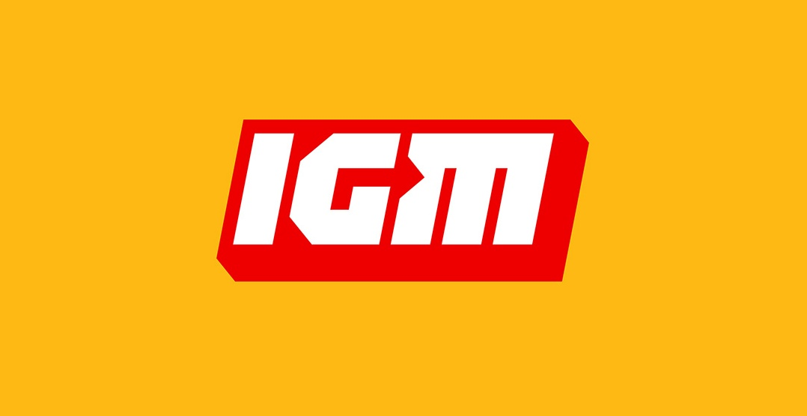

"Игромания"—российское мультиплатформенное издание о видеоиграх: изначально ежемесячный журнал, а впоследствии и сайт.
Ссылки:

"Stopgame"-второй после Игромании портал о видеоиграх в России.
Ссылки:

"IGN"—новостной и информационный веб-сайт, освещающий тематику компьютерных игр, сериалов и кинофильмов. IGN, а также GameSpy и GIGA, входят в корпорацию IGN Entertainment.
Ссылки:
"DTF"—самый качественный контент по играм и фильмам в России, с обзорами геймдева и игр, режиссуры в фильмах.
Ссылки: